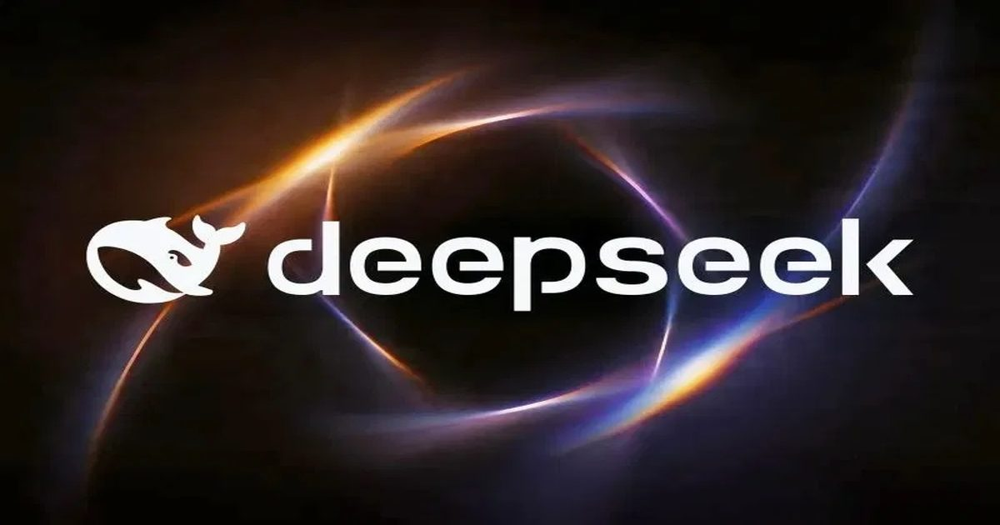

DeepSeek привлекла $15 млрд на борьбу с OpenAI и Anthropic
Китайская ИИ-компания DeepSeek привлекла около 100 млрд юаней ($15 млрд) в рамках очередного раунда финансирования, ставшего одним из крупнейших в стране.
Столь внушительные инвестиции указывают на намерение стартапа конкурировать на глобальном рынке с западными разработчиками, такими как OpenAI и Anthropic.
Источник изображения: DeepSeek